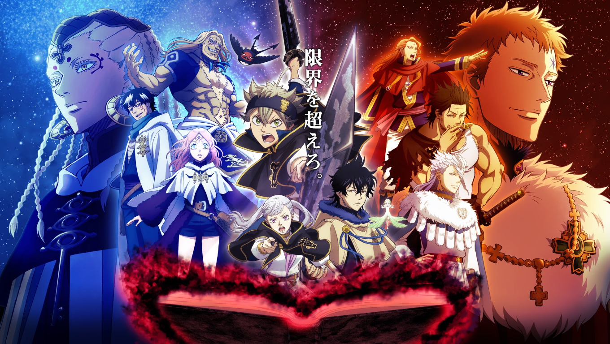
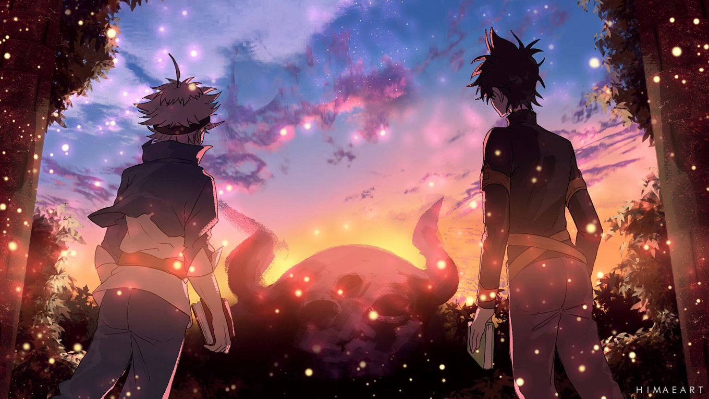

Story of Knights
This story are summary of our mission
The Diamond Kingdom
The story follows Asta and Yuno as they crawl their way up the ladder of the Clover Kingdom's Magic Knights, in the midst of scrutiny by the nobles, to become the Wizard King. However, the title is only preserved for a single mage. Who will attain the coveted title of the strongest mage in the kingdom, Asta or Yuno?
The Power Sucker
The story follows Asta and Yuno as they crawl their way up the ladder of the Clover Kingdom's Magic Knights, in the midst of scrutiny by the nobles, to become the Wizard King. However, the title is only preserved for a single mage. Who will attain the coveted title of the strongest mage in the kingdom, Asta or Yuno?